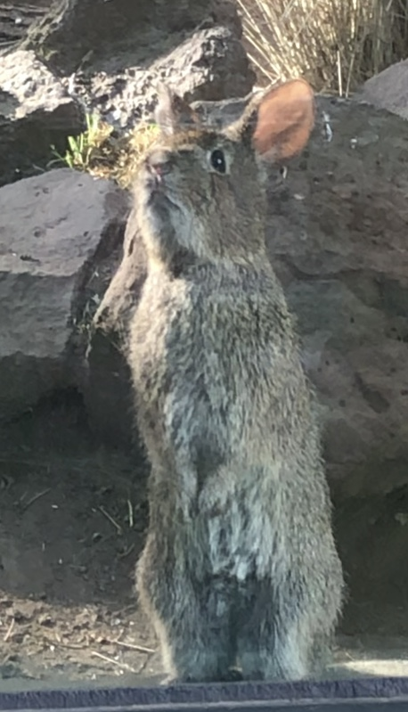

Žije pouze v pohoří Chichinautzin ležícím 300 kilometrů jižně od Mexico City. Jeho domovem jsou řídké borové lesy a pastviny v nadmořské výšce od 2800 m do 4250 m na svazích čtyř vyhaslých sopek – Pelado, Tialoc, Popocatepetl a Ixtaccíhuatl. Areál s průměrnou nadmořskou výškou 3252 m má rozlohu okolo 280 km². Oblast výskytu roztříštil člověk zemědělskou, silniční a městskou zástavbou. Nyní se králík lávový vyskytuje na méně než dvaceti izolovaných lokalitách (otevřené pastviny a borové lesy). Z toho vyplývají různé negativní důsledky (např. snížená rozmanitost rostlinstva kvůli omezenému šíření semen, zhoršená udržitelnost původního travního porostu a tedy primární potravy a ochrany).
V 90. letech 20. stol. byl značný počet králíků lávových zaznamenán v lokalitách s druhy trav, které mají trsový habitus (Festuca tolucensis a Festuca tolucensis – Trisetum altiju-gum, tzn. druh kostřavy a trojštětu), a dále v lokalitách s druhy trav, které mají trsový habitus a jsou vázány na borové lesy (Muhlenbergia quadridentata a F. tolucensis vázané na Pinus hartwegii čili borovici Hartwegovu). Ovšem to, jaká stanoviště z hlediska flóry a skladby králíci preferují, se místně liší. Na sopce Pelado v pohoří Sierra Chichinautzin se populace králíků vyskytovaly především ve smíšených lesích s borovicí a olší (Pinus spp. – Alnus spp.)
